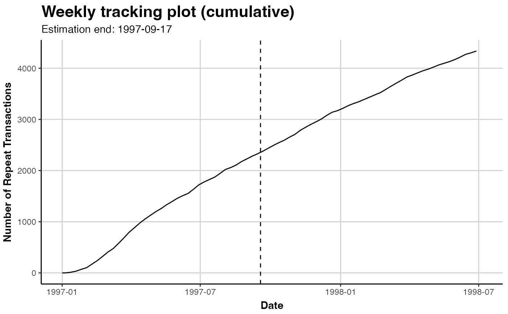
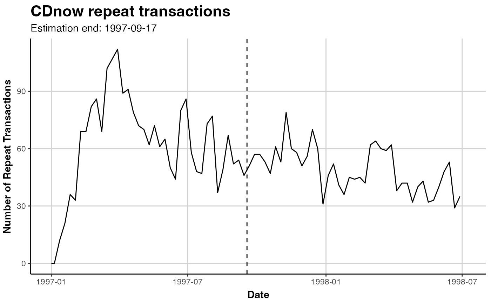
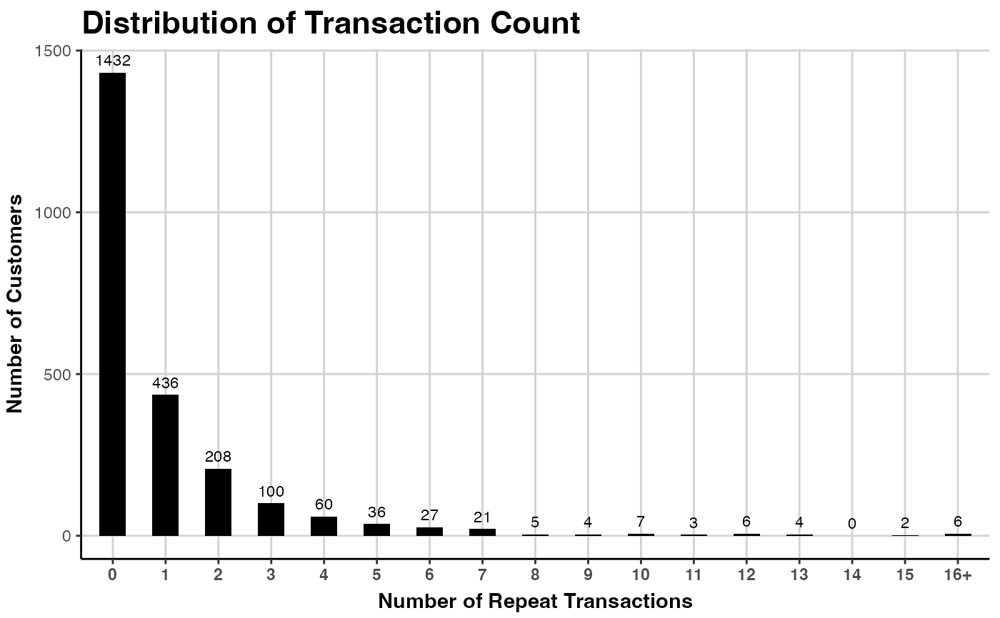
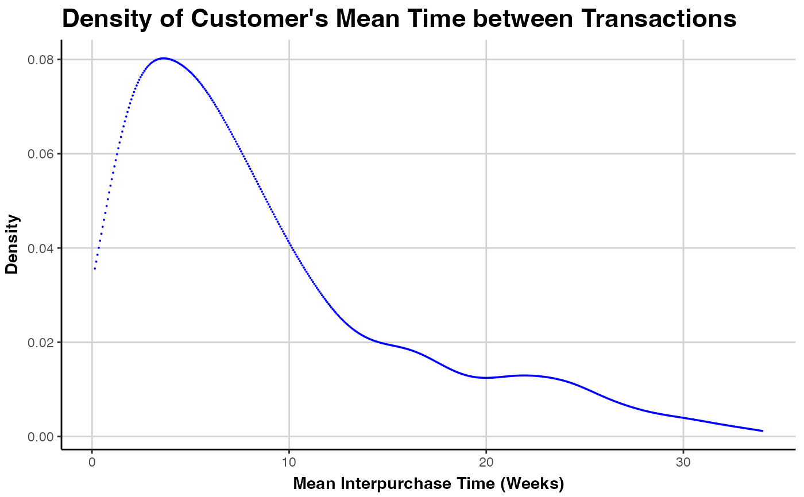
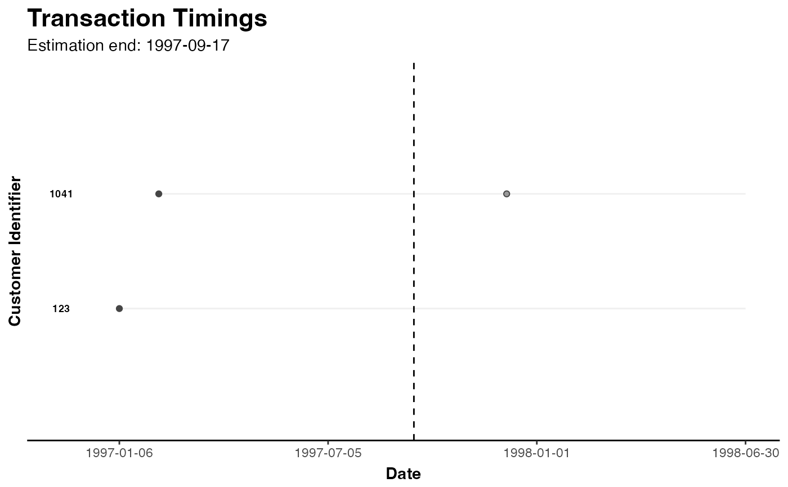
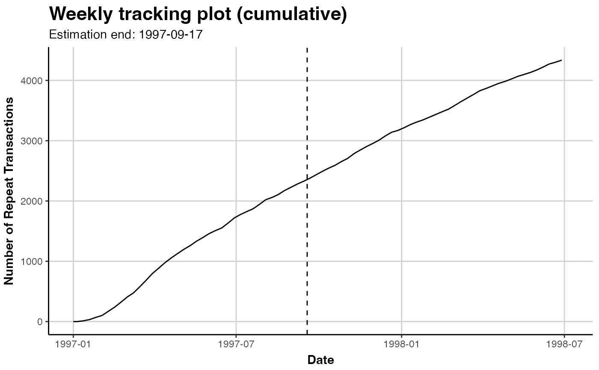
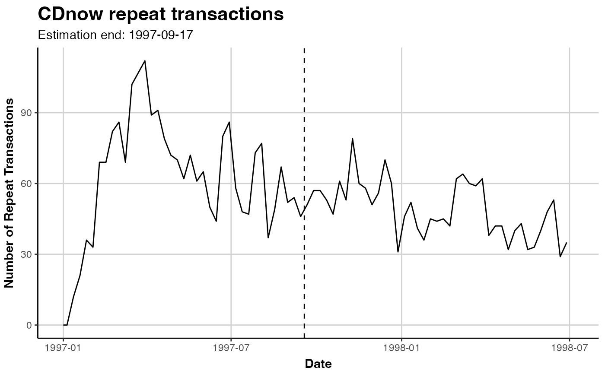
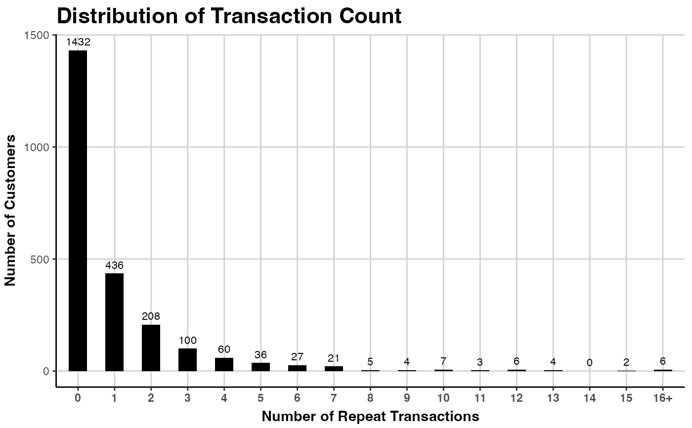
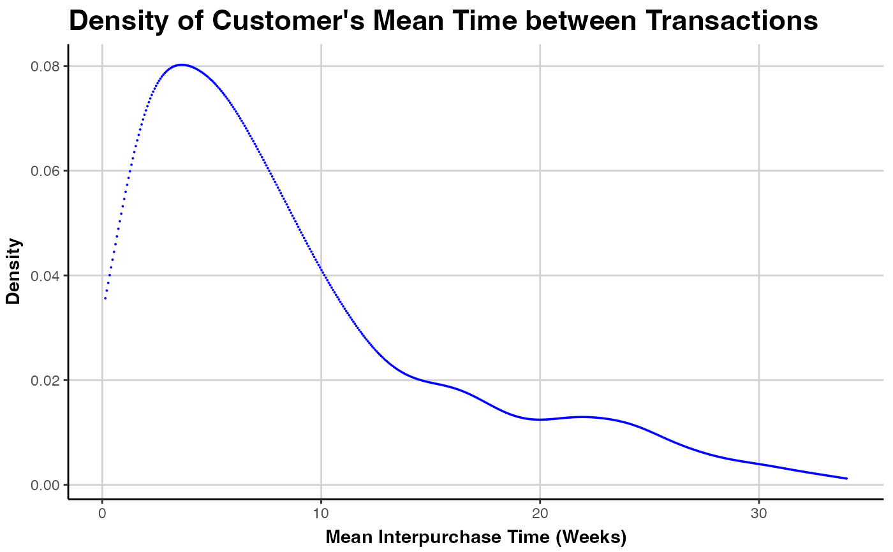
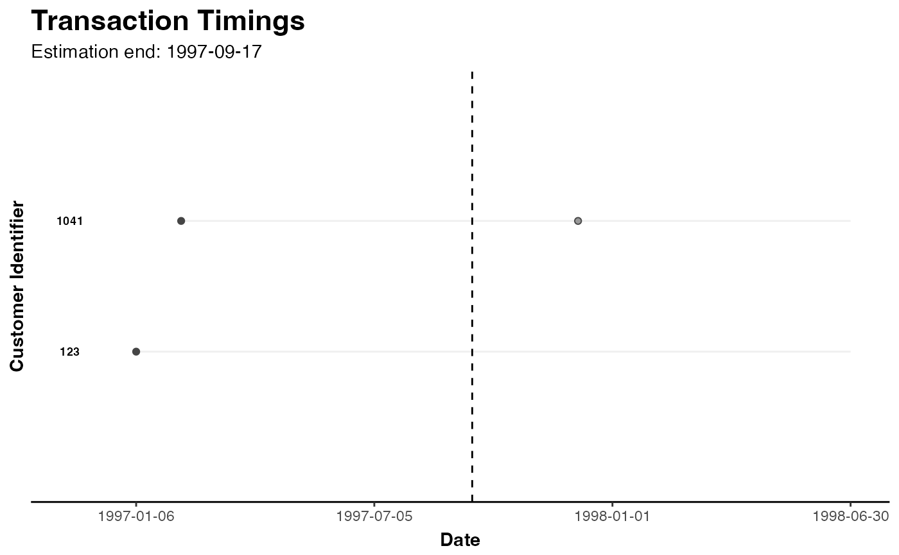

Plot Diagnostics for the Transaction data in a clv.data Object
Source:R/f_s3generics_clvdata_plot.R
plot.clv.data.RdDepending on the value of parameter which, one of the following plots will be produced.
Note that the sample parameter determines the period for which the
selected plot is made (either estimation, holdout, or full).
Tracking Plot
Plot the aggregated repeat transactions per period over the given time-horizon (prediction.end).
See Details for the definition of plotting periods.
Frequency Plot
Plot the distribution of transactions or repeat transactions per customer, after aggregating transactions
of the same customer on a single time point.
Note that if trans.bins is changed, label.remaining usually needs to be adapted as well.
Spending Plot
Plot the empirical density of either customer's average spending per transaction or the value of every transaction in the data, after aggregating transactions of the same customer on a single time point. Note that in all cases this includes all transactions and not only repeat-transactions.
# S3 method for class 'clv.data'
plot(
x,
which = c("tracking", "frequency", "spending", "interpurchasetime", "timings"),
prediction.end = NULL,
cumulative = FALSE,
trans.bins = 0:9,
count.repeat.trans = TRUE,
count.remaining = TRUE,
label.remaining = "10+",
mean.spending = TRUE,
annotate.ids = FALSE,
ids = c(),
sample = c("estimation", "full", "holdout"),
geom = "line",
color = "black",
plot = TRUE,
verbose = TRUE,
...
)Arguments
- x
The clv.data object to plot
- which
Which plot to produce, either "tracking", "frequency", "spending", "interpurchasetime", or "timings". May be abbreviated but only one may be selected. Defaults to "tracking".
- prediction.end
"tracking": Until what point in time to plot. This can be the number of periods (numeric) or a form of date/time object. See details.
- cumulative
"tracking": Whether the cumulative actual repeat transactions should be plotted.
- trans.bins
"frequency": Vector of integers indicating the number of transactions (x axis) for which the customers should be counted.
- count.repeat.trans
"frequency": Whether repeat transactions (TRUE, default) or all transactions (FALSE) should be counted.
- count.remaining
"frequency": Whether the customers which are not captured with
trans.binsshould be counted in a separate last bar.- label.remaining
"frequency": Label for the last bar, if
count.remaining=TRUE.- mean.spending
"spending": Whether customer's mean spending per transaction (
TRUE, default) or the value of every transaction in the data (FALSE) should be plotted.- annotate.ids
"timings": Whether timelines should be annotated with customer ids.
- ids
"timings": A character vector of customer ids or a single integer specifying the number of customers to sample. Defaults to
NULLfor which 50 random customers are selected.- sample
Name of the sample for which the plot should be made, either "estimation", "full", or "holdout". Defaults to "estimation". Not for "tracking" and "timing".
- geom
"spending" and "interpurchasetime": The geometric object of ggplot2 to display the data. Forwarded to ggplot2::stat_density.
- color
Color of resulting geom object in the plot. Not for "tracking" and "timing".
- plot
Whether a plot should be created or only the assembled data returned.
- verbose
Show details about the running of the function.
- ...
Forwarded to ggplot2::stat_density ("spending", "interpurchasetime") or ggplot2::geom_bar ("frequency"). Not for "tracking" and "timings".
Value
An object of class ggplot from package ggplot2 is returned by default.
If plot=FALSE, the data that would have been used to create the plot is returned.
Depending on which plot was selected, this is a data.table
which contains some of the following columns:
- Id
Customer Id
- period.until
The timepoint that marks the end (up until and including) of the period to which the data in this row refers.
- Spending
Spending as defined by parameter
mean.spending.- mean.interpurchase.time
Mean number of periods between transactions per customer, excluding customers with no repeat-transactions.
- num.transactions
The number of (repeat) transactions, depending on
count.repeat.trans.- num.customers
The number of customers.
- type
"timings": Which purpose the value in this row is used for.
- variable
"tracking": The number of actual repeat transactions in the period that ends at
period.until.
"timings": Coordinate (x or y) for which to use the value in this row for.- value
"timings": Date or numeric (stored as string)
"tracking": numeric, may beNAif no repeat-transactions were recorded in this period
Details
prediction.end indicates until when to predict or plot and can be given as either
a point in time (of class Date, POSIXct, or character) or the number of periods.
If prediction.end is of class character, the date/time format set when creating the data object is used for parsing.
If prediction.end is the number of periods, the end of the fitting period serves as the reference point
from which periods are counted. Only full periods may be specified.
If prediction.end is omitted or NULL, it defaults to the end of the holdout period if present and to the
end of the estimation period otherwise.
The first prediction period is defined to start right after the end of the estimation period.
If for example weekly time units are used and the estimation period ends on Sunday 2019-01-01, then the first day
of the first prediction period is Monday 2019-01-02. Each prediction period includes a total of 7 days and
the first prediction period therefore will end on, and include, Sunday 2019-01-08. Subsequent prediction periods
again start on Mondays and end on Sundays.
If prediction.end indicates a timepoint on which to end, this timepoint is included in the prediction period.
If there are no repeat transactions until prediction.end, only the time for which there is data
is plotted. If the data is returned (i.e. with argument plot=FALSE), the respective rows
contain NA in column Number of Repeat Transactions.
See also
ggplot2::stat_density and ggplot2::geom_bar
for possible arguments to ...
plot to plot fitted transaction models
plot to plot fitted spending models
Examples
# \donttest{
data("cdnow")
clv.cdnow <- clvdata(cdnow, time.unit="w",estimation.split=37,
date.format="ymd")
### TRACKING PLOT
# Plot the actual repeat transactions
plot(clv.cdnow)
#> Plotting from 1997-01-01 until 1998-07-05.
#> Warning: A <numeric> value was passed to a Date scale.
#> ℹ The value was converted to a <Date> object.
 # same, explicitly
plot(clv.cdnow, which="tracking")
#> Plotting from 1997-01-01 until 1998-07-05.
#> Warning: A <numeric> value was passed to a Date scale.
#> ℹ The value was converted to a <Date> object.
# same, explicitly
plot(clv.cdnow, which="tracking")
#> Plotting from 1997-01-01 until 1998-07-05.
#> Warning: A <numeric> value was passed to a Date scale.
#> ℹ The value was converted to a <Date> object.
 # plot cumulative repeat transactions
plot(clv.cdnow, cumulative=TRUE)
#> Plotting from 1997-01-01 until 1998-07-05.
#> Warning: A <numeric> value was passed to a Date scale.
#> ℹ The value was converted to a <Date> object.

# Dont automatically plot but tweak further
library(ggplot2) # for ggtitle()
gg.cdnow <- plot(clv.cdnow)
#> Plotting from 1997-01-01 until 1998-07-05.
# change Title
gg.cdnow + ggtitle("CDnow repeat transactions")
#> Warning: A <numeric> value was passed to a Date scale.
#> ℹ The value was converted to a <Date> object.

# Dont return a plot but only the data from
# which it would have been created
dt.plot.data <- plot(clv.cdnow, plot=FALSE)
#> Plotting from 1997-01-01 until 1998-07-05.
### FREQUENCY PLOT
plot(clv.cdnow, which="frequency")
# Bins from 0 to 15, all remaining in bin labelled "16+"
plot(clv.cdnow, which="frequency", trans.bins=0:15,
label.remaining="16+")

# Count all transactions, not only repeat
# Note that the bins have to be adapted to start from 1
plot(clv.cdnow, which="frequency", count.repeat.trans = FALSE,
trans.bins=1:9)
### SPENDING DENSITY
# plot customer's average transaction value
plot(clv.cdnow, which="spending", mean.spending = TRUE)
# distribution of the values of every transaction
plot(clv.cdnow, which="spending", mean.spending = FALSE)
### INTERPURCHASE TIME DENSITY
# plot as small points, in blue
plot(clv.cdnow, which="interpurchasetime",
geom="point", color="blue", size=0.02)

### TIMING PATTERNS
# selected customers and annotating them
plot(clv.cdnow, which="timings", ids=c("123", "1041"), annotate.ids=TRUE)

# plot 25 random customers
plot(clv.cdnow, which="timings", ids=25)
# plot all customers
plot(clv.cdnow, which="timings", ids=nobs(clv.cdnow))
# }
# plot cumulative repeat transactions
plot(clv.cdnow, cumulative=TRUE)
#> Plotting from 1997-01-01 until 1998-07-05.
#> Warning: A <numeric> value was passed to a Date scale.
#> ℹ The value was converted to a <Date> object.

# Dont automatically plot but tweak further
library(ggplot2) # for ggtitle()
gg.cdnow <- plot(clv.cdnow)
#> Plotting from 1997-01-01 until 1998-07-05.
# change Title
gg.cdnow + ggtitle("CDnow repeat transactions")
#> Warning: A <numeric> value was passed to a Date scale.
#> ℹ The value was converted to a <Date> object.

# Dont return a plot but only the data from
# which it would have been created
dt.plot.data <- plot(clv.cdnow, plot=FALSE)
#> Plotting from 1997-01-01 until 1998-07-05.
### FREQUENCY PLOT
plot(clv.cdnow, which="frequency")
# Bins from 0 to 15, all remaining in bin labelled "16+"
plot(clv.cdnow, which="frequency", trans.bins=0:15,
label.remaining="16+")

# Count all transactions, not only repeat
# Note that the bins have to be adapted to start from 1
plot(clv.cdnow, which="frequency", count.repeat.trans = FALSE,
trans.bins=1:9)
### SPENDING DENSITY
# plot customer's average transaction value
plot(clv.cdnow, which="spending", mean.spending = TRUE)
# distribution of the values of every transaction
plot(clv.cdnow, which="spending", mean.spending = FALSE)
### INTERPURCHASE TIME DENSITY
# plot as small points, in blue
plot(clv.cdnow, which="interpurchasetime",
geom="point", color="blue", size=0.02)

### TIMING PATTERNS
# selected customers and annotating them
plot(clv.cdnow, which="timings", ids=c("123", "1041"), annotate.ids=TRUE)

# plot 25 random customers
plot(clv.cdnow, which="timings", ids=25)
# plot all customers
plot(clv.cdnow, which="timings", ids=nobs(clv.cdnow))
# }